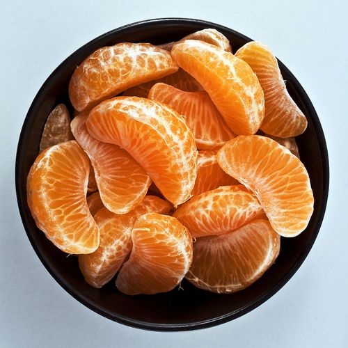

Полезные продукты в зимний период
Зимой стоит тщательно относиться к выбору продуктов, иначе Вы рискуете сильно испортить свое здоровье. В зимнее время, организму особенно важно получать необходимые витамины и минералы для того чтобы поддерживать иммунитет и привычную активность. Здесь собран список продуктов, которые помогут Вам оставаться в форме и не терять продуктивность в холодную пору.
